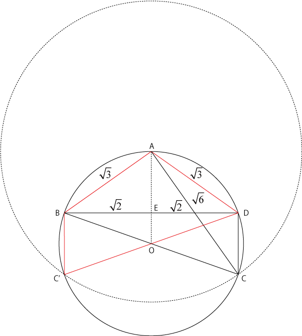
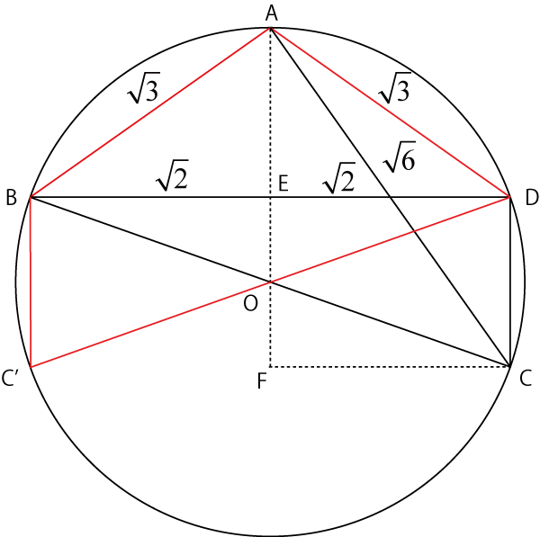

ドラゴン桜，図形問題-02
このページではいろいろと気になる点，気づいた点を考えていきます．
・CD = 3の解は？
解は，
\( \Large CD = 3, 1 \)
となりました．
では，CD = 3，はどのような場合でしょうか？図示すると，

というようにかなりきれいな図形（対称）となります．
さらに，C'D=3，ということはこのABCDを通過する円の半径は，r=3，なのでr=C'Dとなります．
だいぶ原作中に描かれた図と異なることがわかります
・CD（BC'）は垂直？（BD⊥CD?）
線分，CD，BC'は見た目に線分BDと直交しているような気がします，確かめてみましょう．

円の中心Oから真下に伸ばして，Cから水平に伸びる線との交点をFとしましょう，当然Fは90度です．したがって，
\( \Large CO^2 = CF^2 + FO^2 \)
\( \Large AC^2 = CF^2 + AF^2 \)
となりますので，
\( \Large \left( \frac{3}{2} \right)^2 = CF^2 + FO^2 \)
\( \Large \sqrt{6}^2 = CF^2 +( \frac{3}{2} +FO)^2 \)
となり，
\( \Large CF^2 + FO^2 = \frac{9}{4} \)
\( \Large CF^2 + \frac{9}{4} + 3 FO + FO^2 =6 \)
となるので，差分をとると，
\( \Large 3 FO =6- \frac{9}{2} = \frac{3}{2}\)
\( \Large FO = \frac{1}{2}\)
\( \Large CF^2 + \left( \frac{1}{2} \right)^2 = \frac{9}{4} \)
\( \Large CF^2 = \frac{8}{4} = 2 \)
\( \Large CF = \sqrt{2} \)
これより，CF=DE，となるのでCD⊥BDとなります．
・出題者の意図
こうやって正確に図形を描画してみると，当初想像したよりかなりきれいな図形が作題されていることがわかりますね．
つまり，出題者は，きれいな図形をもとに問題を作成している，ことになります．
ある意味，理にかなっている作題方法なのかもしれません．
しかし，”ドラゴン桜”に書かれているように，「見ただけで答えが推測できる」までの境地には至りませんでした．．．